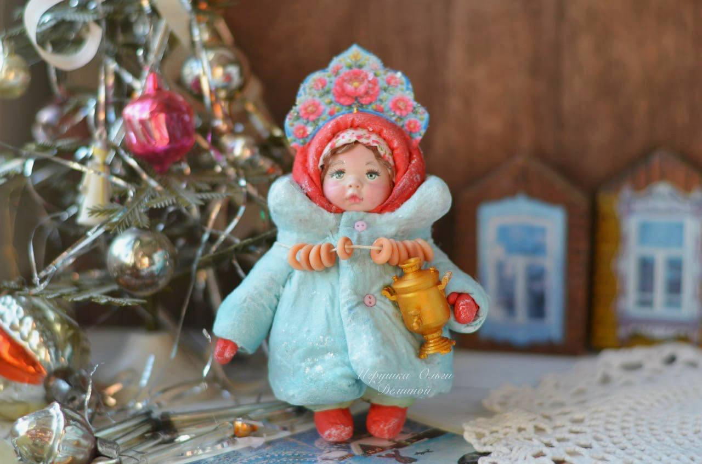
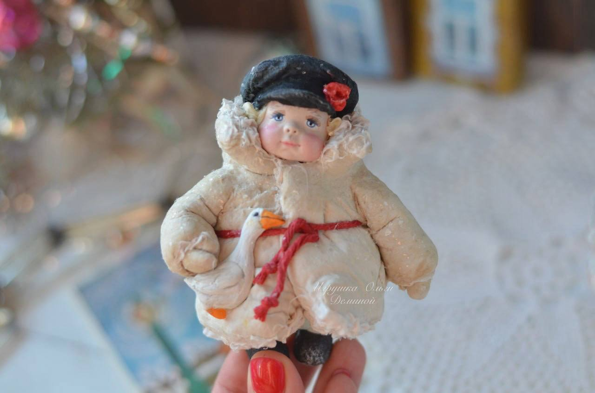
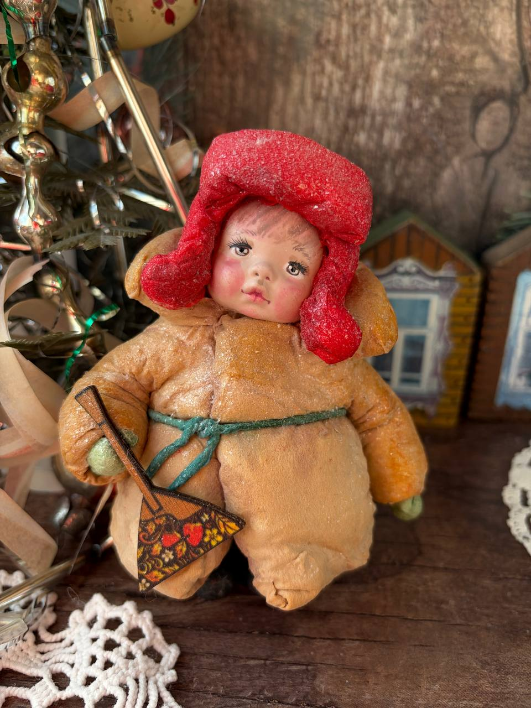
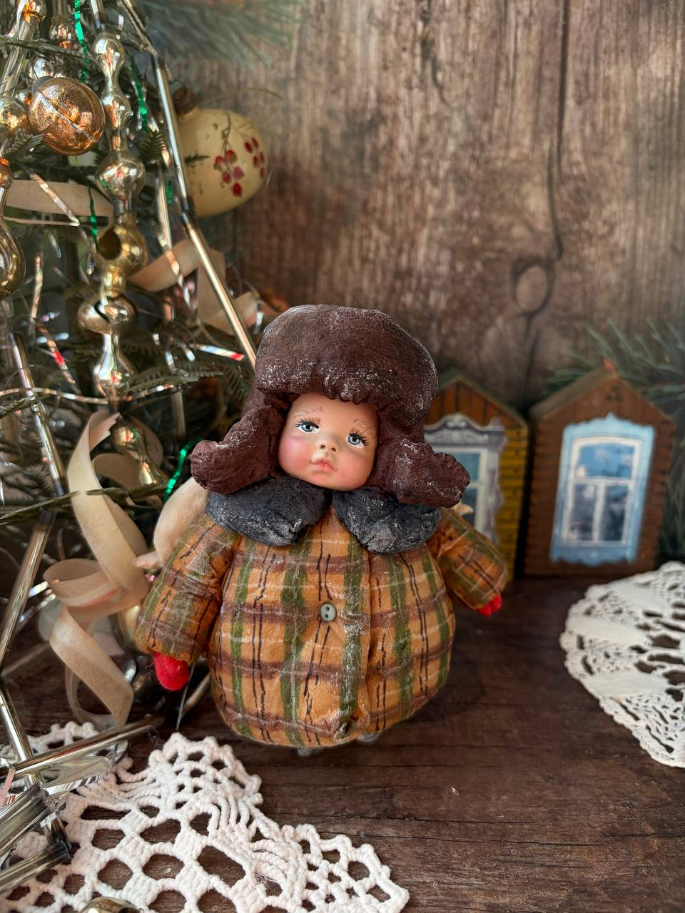
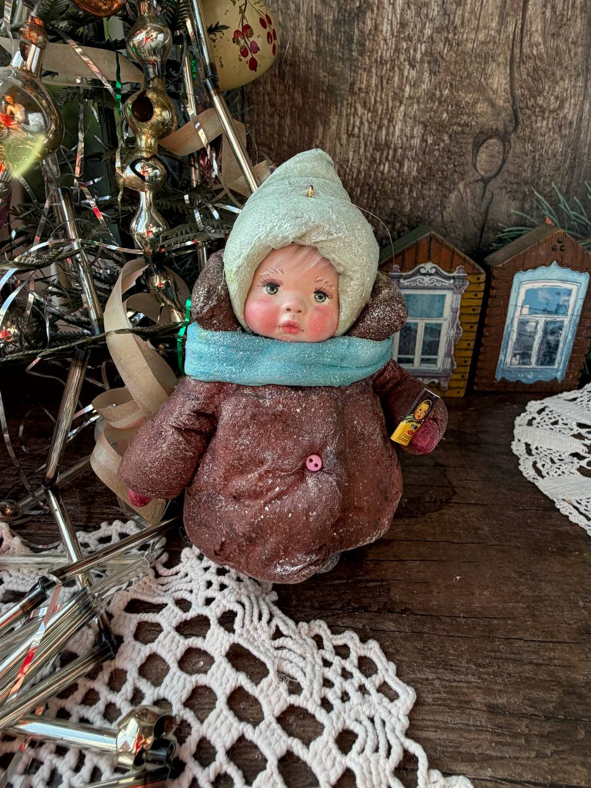
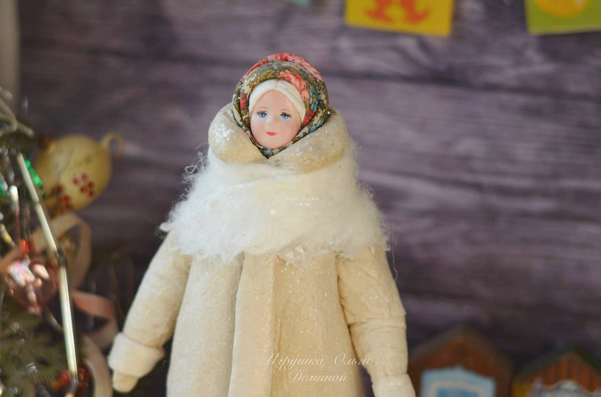

Ватная игрушка «Классический Дед Мороз»
Главный волшебник зимы, словно сошедший со страниц старинных новогодних сказок. Дедушка облачен в богатый белоснежный тулуп с пушистой меховой опушкой, из-под которого виден роскошный изумрудный кафтан с традиционным геометрическим орнаментом. В руках он крепко держит холщовый мешок с подарками, а его лицо, расписанное вручную, излучает невероятную мудрость, теплоту и добрую улыбку. Покрыт деликатным мерцающим слюдяным блеском, который создает эффект только что выпавшего новогоднего снега.
В наличии
«Русская зима: Чай да Песни».
Очаровательный дуэт авторских ватных кукол, возвращающий в атмосферу уютного сказочного детства. Малыши одеты в объемные зимние шубки, словно слепленные из пушистого снега. Девочка в нарядном узорчатом кокошнике бережно держит миниатюрный золотой самовар, а румяный мальчик в теплой нежно-голубой шапке-ушанке задорно растягивает ладную гармошку с традиционным орнаментом. Игрушки выполнены полностью вручную из окрашенной ваты и клейстера по старинной технологии, а их лица с детальной росписью передают искренние живые эмоции.
Доступно для заказа
Малышка с самоваром и баранками
Очаровательная авторская игрушка из ваты, бережно воссоздающая дух ушедшей эпохи и тепло старинных праздников. На фоне мерцающей новогодней ёлки и расписных домиков стоит маленькая румяная девочка, готовая к зимнему застолью.
Доступно для заказа
Мальчик с гусем
Трогательная авторская миниатюра, возвращающая в атмосферу безмятежного зимнего детства и старых рождественских открыток.
Доступно для заказа
Юный музыкант
Душевная и колоритная авторская миниатюра, пропитанная атмосферой старинного русского праздника. Круглолицый румяный мальчуган одет в объемный горчичный тулупчик с высоким воротником, подпоясанный простой зеленой бечевкой. В руках маленький музыкант уверенно держит свой главный повод для гордости — миниатюрную деревянную балалайку, украшенную традиционной хохломской росписью с узорами из спелых ягод.
Доступно для заказа
Малыш в ушанке
Уютная и невероятно трогательная авторская миниатюра, словно сошедшая со страниц советского новогоднего календаря.
Доступно для заказа
Сладкий подарок
Пленительная и бесконечно добрая авторская миниатюра, оживляющая воспоминания о самом долгожданном новогоднем гостинце.
Доступно для заказа
Барышня в расписном платке
Нежная и статная красавица, воплощающая поэтичный образ традиционной русской зимы
Доступно для заказа